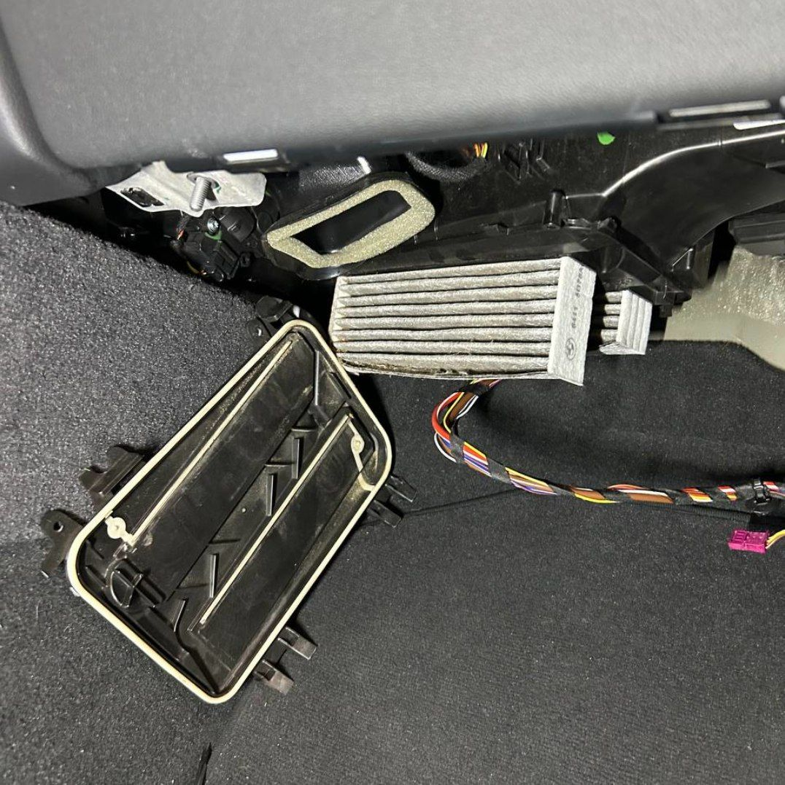
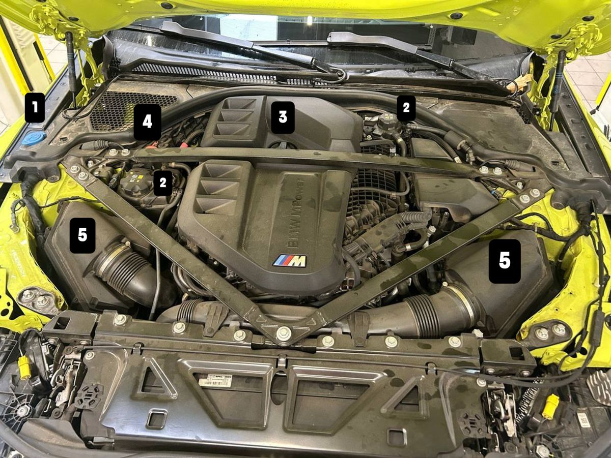
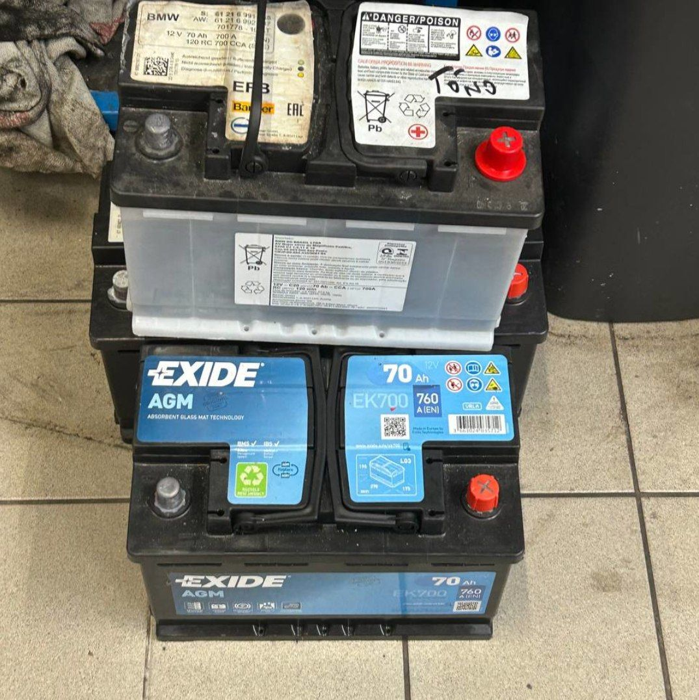
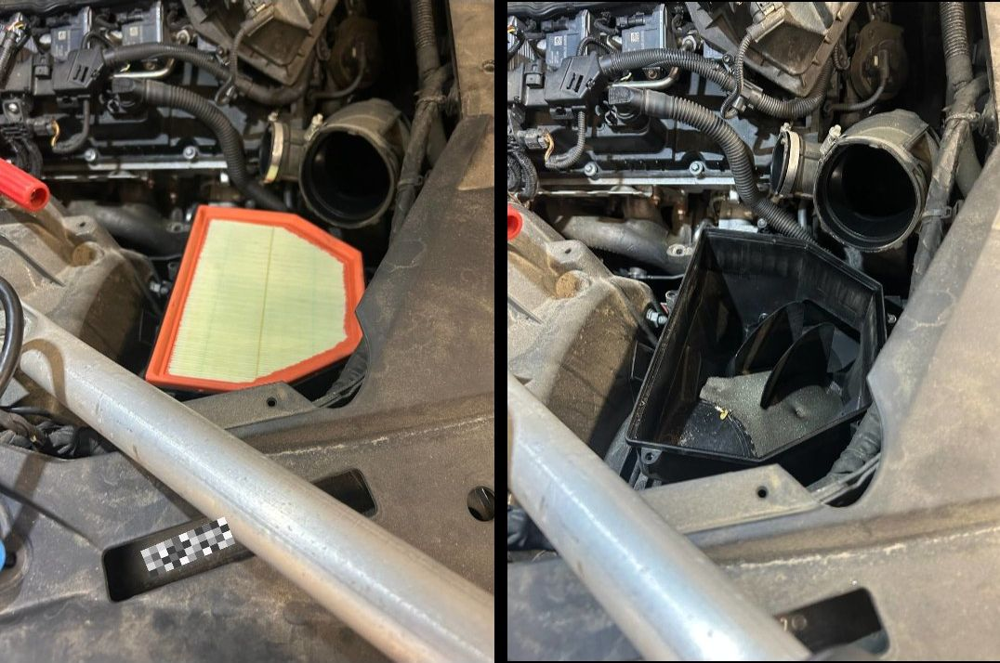
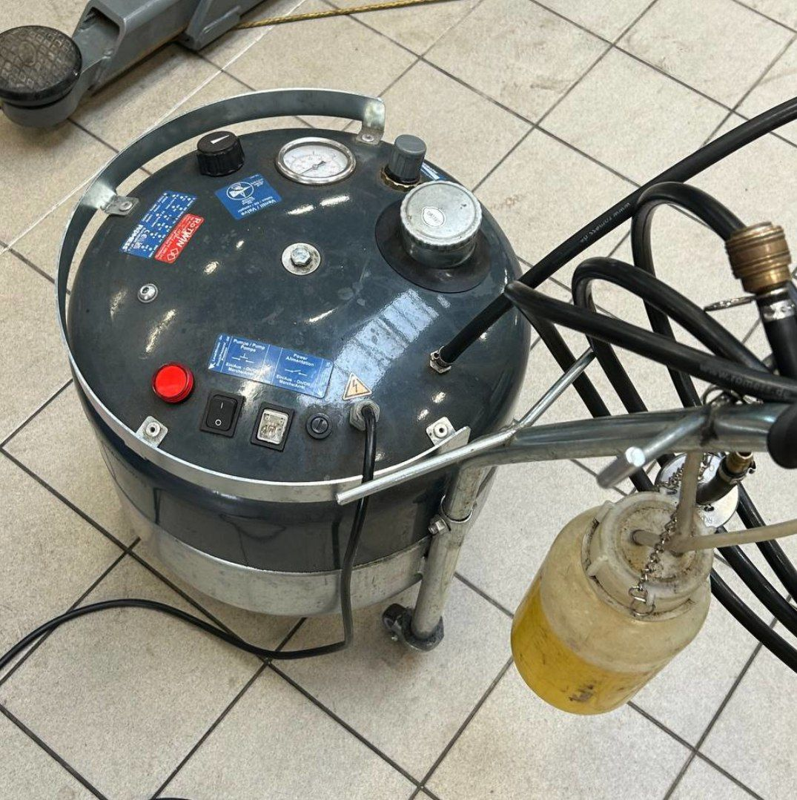
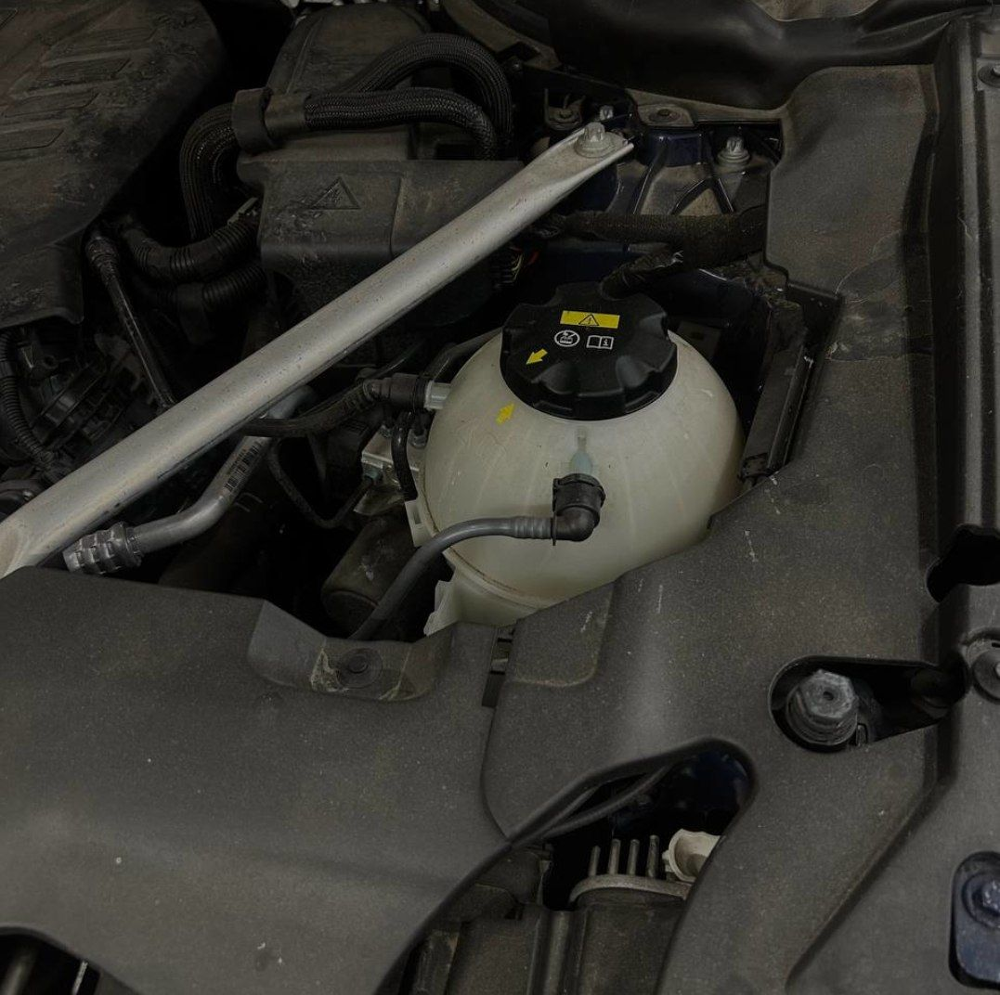
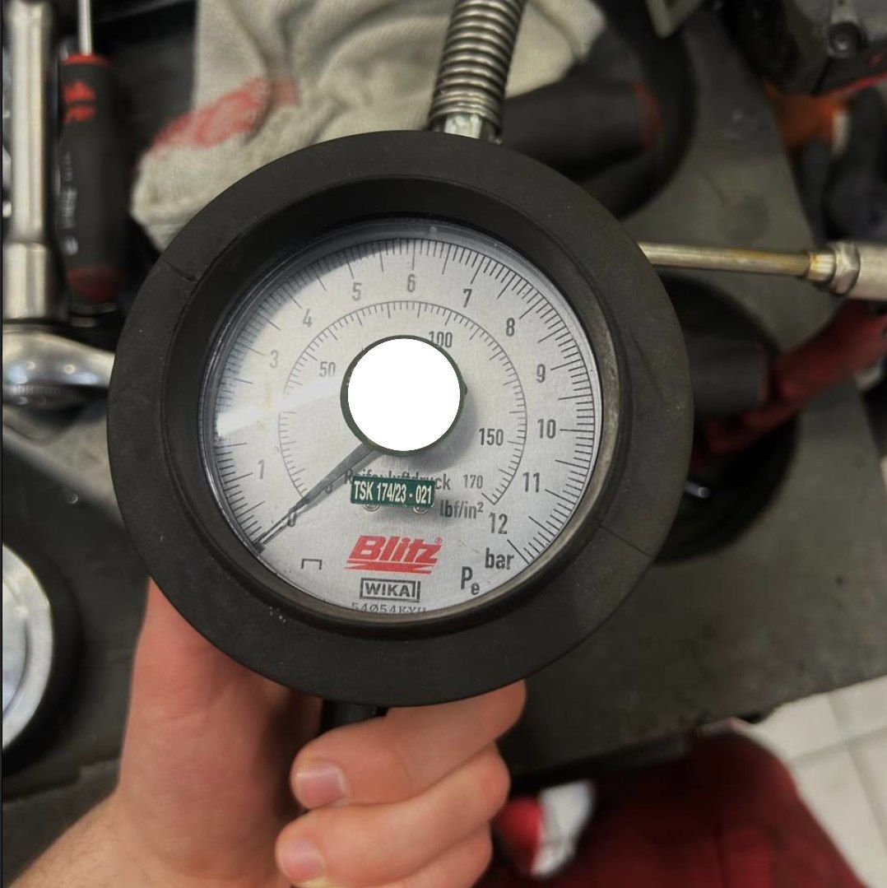
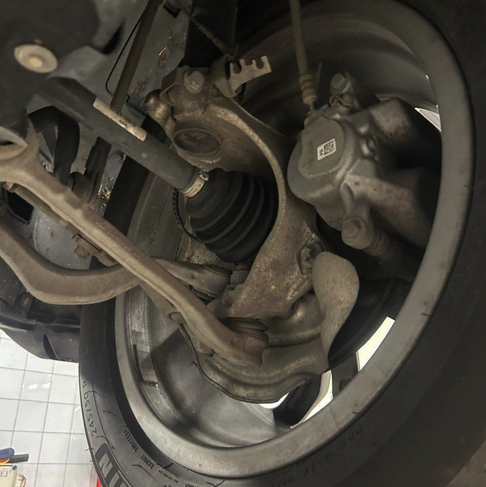

Know your BMW before you visit the shop.
Where things are, what to check and what the warning signs mean, written in plain English by someone who works at a BMW service.
Battery and electrical
Where the battery sits, what registration means and how to jump-start safely.
Fluids and filters
Oil, coolant and brake fluid: where they are and how to check them.
Brakes and suspension
What the parts look like, what wears first and what to listen for.
Diagnostics
OBD port, service reminders and what warning lights are telling you.
Latest guides

Fluids and filtersBMW Cabin Air Filter: Location and How to Replace It
Where the cabin air filter is on larger BMWs such as the X5, which screws hold the cover and how to replace one large or two small filter elements.

Fluids and filtersWhat's Under the Hood of a BMW: Where Everything Is
A numbered look under the hood of a BMW M model: where the washer fluid, coolant and engine oil go in, where the jump-start terminal is and where the air filters sit.
 Battery and electrical
Battery and electrical
BMW Jump-Start Points: Where to Connect the Cables
Where to connect jumper cables on a BMW: the positive terminal under the hood and the grounding point, the correct order and what to check afterwards.

Battery and electricalBMW Battery Registration: What It Is and Why It Matters
Why a new BMW battery needs to be registered, what the intelligent battery sensor does, what can happen if you skip it and how it is done with a scanner.

Fluids and filtersBMW Engine Air Filter: Location and How to Replace It
Where the engine air filter sits on a BMW, how the airbox is held shut and how to replace the filter step by step, with photos.

Brakes and suspensionBMW Brake Fluid Change: How It's Done and Can You DIY?
How a BMW brake fluid change is done in a workshop with a pressure bleeder, what fluid to use, how often it is needed and how to do it at home safely.
 Fluids and filters
Fluids and filters
BMW Oil Drain Plug: What the Hole in the Undertray Is For
Why many BMWs have a round opening in the underbody panel, what it gives access to and what to know before you drain the engine oil yourself.
 Brakes and suspension
Brakes and suspension
BMW Brake Pad Wear: How to Measure Thickness
How to measure brake pad thickness on a BMW with a depth gauge, what the wear sensor does and the thickness at which pads are usually replaced.

Fluids and filtersBMW Coolant: How to Check the Level and Which Type to Use
How to check the coolant level on a BMW, why the cap must be closed tightly and why you should not mix coolant types, with photos.
 Diagnostics
Diagnostics
BMW OBD Port Location: Where It Is and What It's For
Where the OBD port is on a BMW, why some cars have a protective cover over it and what the port is used for, from reading codes to battery registration.

Brakes and suspensionBMW Tire Pressure: Where to Find the Right PSI
Where to find the correct tire pressure for your BMW, why you must read the sticker for your exact tire size and how to check it properly.

Brakes and suspensionBMW Front Suspension: Main Parts and Signs of Wear
What you can see behind a BMW front wheel, what the main suspension parts do and the signs that something is worn.
 Battery and electrical
Battery and electrical
Where Is the Battery on a BMW?
Where the battery is on a BMW: in the trunk under a square cover on many models, under the hood on some older ones, and how to tell.
 Brakes and suspension
Brakes and suspension
BMW Jack Points: Where to Lift the Car Safely
Where the jack points are on a BMW: four rectangular black pads under the sill, how to find them and how to lift the car safely.
 Brakes and suspension
Brakes and suspension
BMW Brake Pad and Rotor Replacement: How It's Done
How a BMW brake pad and rotor replacement is done step by step: removing the caliper, pads and rotor, cleaning the hub and fitting the new parts.
 Brakes and suspension
Brakes and suspension
BMW Wheel Bolts: How to Tighten Them Correctly
How to tighten BMW wheel bolts correctly: start by hand, tighten opposite bolts in a crisscross order, use a torque wrench and re-check after driving.
How these guides are written
I work at a BMW service, and I write down the questions I hear most often so the next person doesn't have to dig through ten forum threads. Where something differs between models, I say so. Where a step can go wrong, I say that too. Always check your own car's manual for exact specifications.